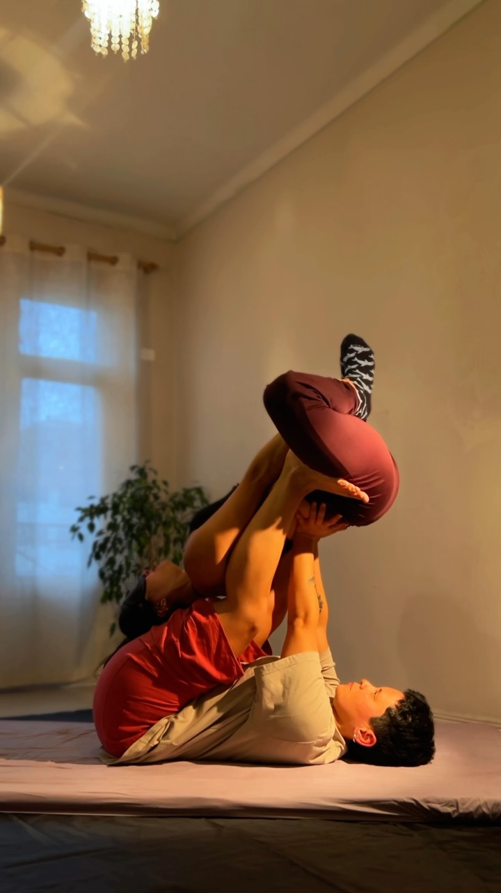
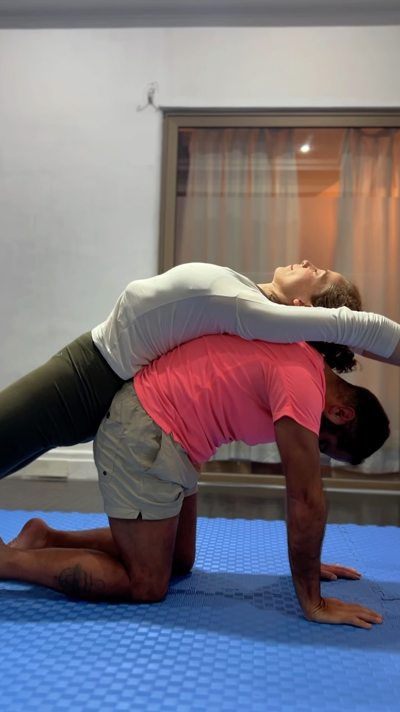

AcroYoga Lunar
Sostener, ser sostenida y crecer en comunidad.
El AcroYoga Lunar integra movimiento, contacto terapéutico y educación corporal: vuelos terapéuticos, masaje tailandés y trabajo en dupla donde la resiliencia no se construye solo desde la fuerza individual, sino desde los vínculos que nos permiten sostener y ser sostenidas. Un espacio seguro, colaborativo y respetuoso.

Los tres formatos
- Curso regular (jueves) — ciclos mensuales de 4 sesiones de 2 horas: fundamentos, vuelos terapéuticos y masaje tailandés, paso a paso. Grupo semi personalizado de 8 cupos.
- Encuentros Lunares (1 viernes al mes) — clase guiada + práctica libre para conocer gente que también cree que el bienestar se construye en comunidad. $5.000 por persona.
- Seminarios (1 domingo al mes) — jornada intensiva de 10:00 a 17:00: regulación del sistema nervioso, comunicación y confianza en movimiento, fuerza y transiciones.
Qué vas a trabajar
- Regulación — herramientas para calmar el estrés y cuidar tu sistema nervioso a través del contacto.
- Colaboración — comunicarte con el cuerpo, desarrollar confianza y construir vínculos.
- Consciencia corporal — movilidad y capacidad de escuchar las señales de tu cuerpo.
- Movimiento — fuerza, coordinación y equilibrio en secuencias conscientes.
¿Es para mí?
No necesitas experiencia previa ni venir con pareja. Los grupos son multinivel, con propuestas adaptadas al proceso de cada participante. Es para ti si quieres explorar el movimiento en un espacio seguro, disfrutas aprender en comunidad o buscas incorporar el movimiento como herramienta de bienestar.
Tu profe
Sofía · Volver al Cuerpo
Terapeuta corporal. Enseña AcroYoga Lunar, masaje tailandés y educación corporal, con seminarios en Santiago, Concepción y retiros en el sur.
@volveralcuerpo.cl →